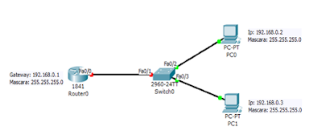
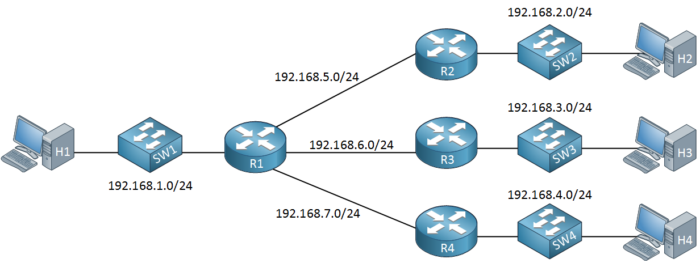
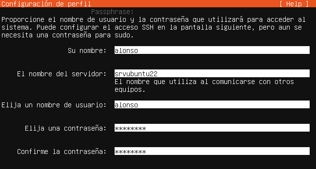
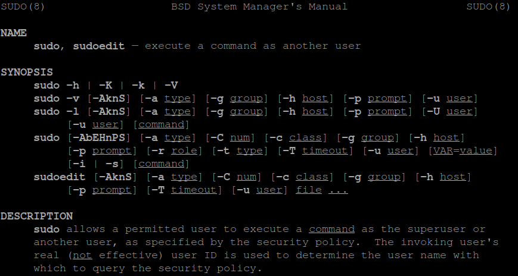
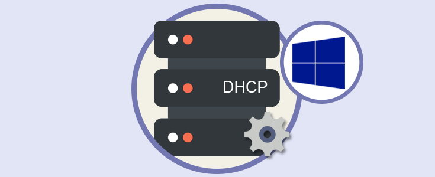
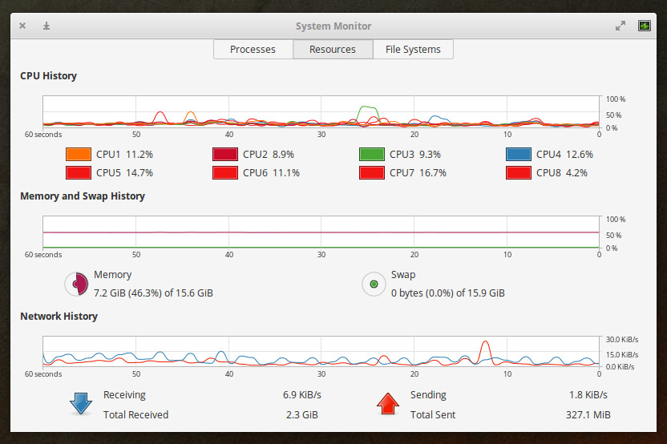

Prácticas
Aquí encontrarás ejercicios guiados para aplicar los conocimientos de redes y sistemas operativos.
1. Configuración de una Red Local
La configuración de una red local consiste en conectar varios dispositivos dentro de un mismo espacio para compartir información y recursos. Se asignan direcciones IP a cada equipo para que puedan comunicarse correctamente. También se configuran dispositivos como routers y switches para gestionar el tráfico de datos.

2. Subredes
Las subredes son divisiones de una red más grande que permiten organizar mejor los dispositivos conectados. Cada subred tiene un rango específico de direcciones IP para identificar a sus equipos. Su uso ayuda a reducir el tráfico de red y mejorar el rendimiento de las comunicaciones.

3. Instalación de Linux en una Máquina Virtual
La instalación de Linux en una máquina virtual permite ejecutar este sistema operativo sin modificar el equipo principal. Primero se crea una máquina virtual utilizando un programa como VirtualBox o VMware Workstation. Después, se carga la imagen ISO de Linux y se sigue el proceso de instalación guiado.

4. Gestión de Usuarios y Permisos
La gestión de usuarios y permisos consiste en controlar quién puede acceder a los recursos de un sistema. Cada usuario tiene una cuenta con permisos específicos según sus funciones y necesidades. Los permisos permiten restringir o autorizar acciones como leer, modificar o eliminar archivos.

5. Configuración de un Servidor DHCP
La configuración de un servidor DHCP permite asignar automáticamente direcciones IP a los dispositivos de una red. El administrador define un rango de direcciones IP y otros parámetros como la puerta de enlace y los servidores DNS. Cuando un equipo se conecta, el servidor le proporciona una configuración de red válida de forma automática.

6. Monitorización de Procesos
La monitorización de procesos consiste en observar y controlar los programas que se están ejecutando en un sistema. Permite ver el uso de recursos como CPU, memoria y disco por cada proceso activo. Con esta información se pueden detectar fallos, bloqueos o consumo excesivo de recursos.
